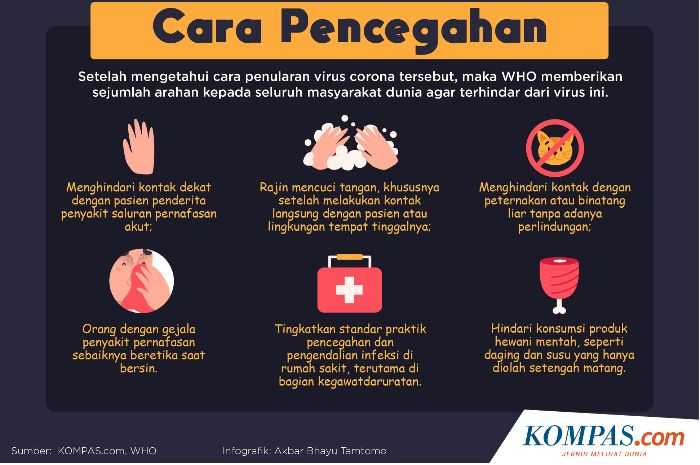
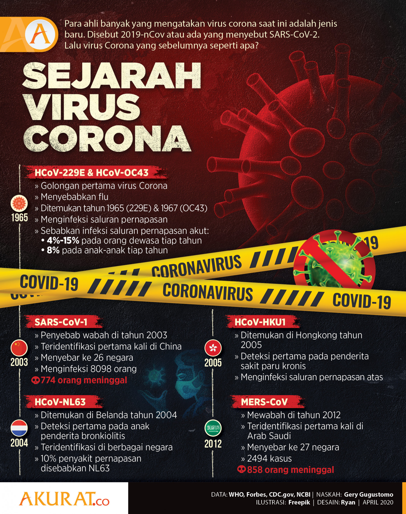

<div class="container">
    <div class="text-dark">
        <div class="d-flex flex-column justify-content-center ">
            <div class="card mt-3 text-left" style="width: 100%;">
                <div class="card-body">

                    <p class="card-text text-center">Waspada gejalanya</p>
                    <div class="collapse" id="collapseExample">
                        <div class="row">
                            <div class="col-sm">
                               
                            </div>
                            <div class="col-sm">
                                Orang yang terinfeksi COVID-19 menunjukkan berbagai gejala yang dilaporkan - mulai
                                dari gejala ringan hingga sakit parah.
                                <br>
                                <br>
                                Gejala dapat muncul <b>2-14 hari setelah terpapar virus.</b> Orang dengan gejala
                                berikut berkemungkinan terinfeksi COVID-19:
                                <ul>
                                    <li>Demam</li>
                                    <li>Batuk</li>
                                    <li>Napas pendek</li>
                                    <li>Kelelahan</li>
                                    <li>Sakit tubuh</li>
                                    <li>Sakit kepala</li>
                                    <li>Kehilangan indra rasa dan bau</li>
                                    <li>Sakit tenggorokan</li>
                                    <li>Hidung tersumbat</li>
                                    <li>Mual</li>
                                    <li>Diare</li>
                                </ul>
                                Daftar ini tidak menutup kemungkinan gejala lain. CDC akan terus memperbarui daftar
                                ini sejalan dengan kami meneliti lebih lanjut tentang COVID-19.
                            </div>

                        </div>
                    </div>
                    <div class="text-center">
                        <a class="btn btn-warning mt-4" data-toggle="collapse" href="#collapseExample" role="button"
                            aria-expanded="false" aria-controls="collapseExample">
                            ReadMore
                        </a>
                    </div>
                </div>
            </div>

            <div class="card mt-3 text-left" style="width: 100%;">
                <div class="card-body">
                    <h5 class="kartu card-title display-5 "><a
                            href="https://www.sehatq.com/artikel/mencegah-virus-corona-lakukan-langkah-sederhana-ini">Prevention</a>
                    </h5>
                    <p class="card-text text-center">Cara-cara dalam mencegah Covid-19</p>
                    <div class="collapse" id="collapseExample1">
                        <div class="row">
                            <div class="col-sm">
                                
                            </div>
                            <div class="col-sm">
                                Beberapa upaya pencegahan penularan virus corona yang dapat Anda lakukan meliputi:
                                <br>
                                <ul>
                                    <li>Lebih sering mencuci tangan</li>
                                    </li>
                                    <li>Jangan sering menyentuh area mata, hidung, dan mulut</li>
                                    <li>Memperhatikan kebersihan ketika bersin, batuk, dan membuang ludah</li>
                                    <li>Mengisolasikan diri</li>
                                    <li>Menggunakan masker</li>
                                </ul>
                            </div>
                        </div>
                    </div>
                    <div class="text-center">
                        <a class="btn btn-warning mt-4" data-toggle="collapse" href="#collapseExample1"
                            role="button" aria-expanded="false" aria-controls="collapseExample1">
                            ReadMore
                        </a>
                    </div>
                </div>
            </div>

            <div class="card mt-3 text-left" style="width: 100%;">
                <div class="card-body">
                    <h5 class="kartu card-title display-5 "><a
                            href="https://www.riauonline.co.id/nasional/read/2020/03/31/10-alasan-tak-perlu-takut-hadapi-virus-covid-19">Should
                            I Worry?</a></h5>
                    <p class="card-text text-center">Apakah anda harus khawatir dengan Covid-19?</p>
                    <div class="collapse" id="collapseExample2">
                        <div class="row">
                            <div class="col-sm">
                                
                            </div>
                            <div class="col-sm">
                                Tentunya kita tidak perlu panik, namun tetap harus waspada.
                                <br>
                                <p>
                                    Penyakit yang disebabkan infeksi COVID-19 pada umumnya ringan, terutama pada
                                    anak-anak dan orang dewasa
                                    muda. Namun, infeksi ini tetap dapat menyebabkan penyakit serius: sekitar 1 dari
                                    5 orang yang terjangkit
                                    memerlukan perawatan di rumah sakit. Karenanya, wajar jika orang khawatir
                                    tentang sulitnya COVID-19
                                    pada diri mereka dan orang-orang yang mereka kasihi.
                                    Kita bisa menyalurkan bantuan kita dengan cara melindungi diri kita, orang-orang
                                    yang kita kasihi dan
                                    masyarakat kita. Tindakan yang terpenting adalah rajin yang memegang tangan
                                    tertutup dan tertutup saat
                                    batuk dan bersin. Selain itu, tetap mengikuti perkembangan informasi dan patuhi
                                    nasihat dinas kesehatan
                                    lokal termasuk persetujuan perjalanan, pergerakan dan rapat yang diberlakukan.
                                </p>
                            </div>
                        </div>
                    </div>
                </div>
                <div class="text-center">
                    <a class="btn btn-warning mt-4" data-toggle="collapse" href="#collapseExample2" role="button"
                        aria-expanded="false" aria-controls="collapseExample2">
                        ReadMore
                    </a>
                </div>
            </div>
        </div>

        <div class="card mt-3 text-left" style="width: 100%;">
            <div class="card-body">
                <h5 class="kartu card-title display-5 "><a
                        href="https://bebas.kompas.id/baca/opini/2020/04/08/sejarah-panjang-virus-korona/">History</a>
                </h5>
                <p class="card-text text-center">Awal mula terciptanya virus Covid-19</p>
                <div class="collapse" id="collapseExample3">
                    <div class="row">
                        <div class="col-sm">
                            
                        </div>
                        <div class="col-sm">
                            Sejarah Virus Corona versi Tahun 2019
                            <br>
                            <p>
                                Wabah terbaru virus korona terjadi sejak akhir tahun 2019, bermula di Wuhan,
                                Provinsi Hubei, China.
                                Virus diduga bersumber dari kelelawar yang menular ke hewan lain sebelum ”melompat”
                                ke manusia.
                            </p>
                            <p>
                                Meski bentuknya mirip, virus ini memiliki perbedaan karakter sehingga dinamakan
                                SARS-CoV-2 yang
                                menyebabkan Covid-19 (penyakit akibat virus korona 2019).
                            </p>
                            <p>
                                Sebagaimana infeksi korona lain, tampilan klinisnya dari tanpa gejala, gangguan
                                pernapasan ringan,
                                pnumonia sampai gangguan pernapasan parah, gagal ginjal serta kematian. Penularan
                                juga lewat percikan cairan dari
                                bersin dan batuk. Masa inkubasi sekitar 2-14 hari, rata-rata gejala tampak pada hari
                                ke-5.
                            </p>
                        </div>
                    </div>
                </div>
                <div class="text-center">
                    <a class="btn btn-warning mt-4" data-toggle="collapse" href="#collapseExample3" role="button"
                        aria-expanded="false" aria-controls="collapseExample3">
                        ReadMore
                    </a>
                </div>
            </div>
        </div>
    </div>